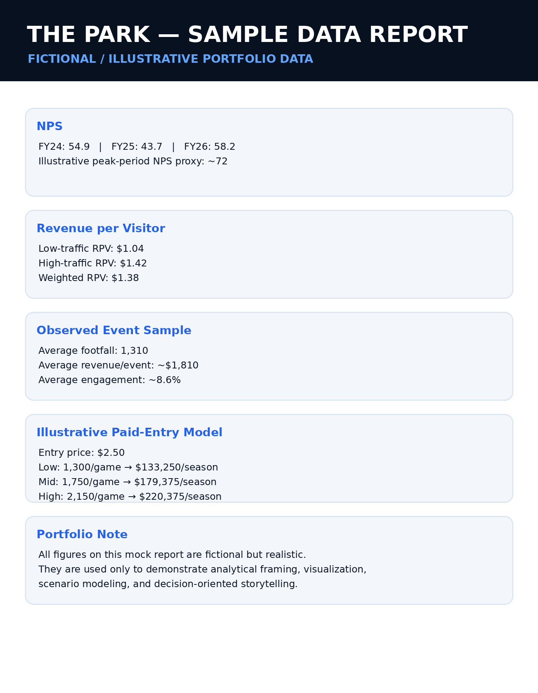

Peak periods materially outperform the middle of the season.
Using the FY26 average NPS of 58.2 and observed mid-season performance around 51.1, the report estimates early- and late-season periods around 72.
A decision-focused portfolio case study using fictional but realistic data to demonstrate fan-experience analysis, revenue efficiency, scenario modeling, and strategic recommendation.
The report looks beyond attendance and asks whether The Park contributes meaningful fan-experience and revenue value across both high- and low-traffic event days. It combines NPS proxies, engagement, footfall, revenue per visitor, and scenario projections.
Using the FY26 average NPS of 58.2 and observed mid-season performance around 51.1, the report estimates early- and late-season periods around 72.
Low-traffic revenue per visitor is roughly $1.04 versus $1.42 on high-traffic days, with an overall weighted figure of $1.38.
The report argues that targeted adjustments on lower-performing days could turn smaller crowds into stronger engagement environments.
The report models a $2.50 entry price rather than assuming attendance growth.
LOW · 1,300$133,250
MID · 1,750$179,375
HIGH · 2,150$220,375
Projected season revenue · 41 games · $2.50 entryPreserve The Park as part of the broader fan experience while testing a modest paid-entry model that leverages traffic already being generated.
This redesigned sample report uses fictional figures to demonstrate the event-level tables, NPS and revenue-per-visitor comparisons, scenario projections, and analytical storytelling approach.

Open full report ↗{kind=link}